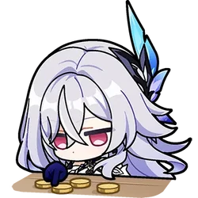

HAPPY BIRTHDAY
Tondi
"Disciple of Surtalogi • Master of the Realm Beyond"
PENELUSURAN ABYSS

WEISHEIT DARI SKIRK
Yayy happy 16th birthdayy Tondii!! 🌌
As you turn 16 today my biggest wish for you is that this year brings you happiness, good people, new experiences, and lots of reasons to be proud of yourself! Alsooo, i really hope you can get into FEB UGM and achieve everything youve been working for!! I know youll be an amazing consultant/accountant. I hope you chase every single one of your dreams, because if anyone can achieve big things, it’s definitely you!! xD ⚡
Pesan khusus dari sang Master Pedang *Abyssal Realm*:
Hope you never feel like you have to exhaust yourself just to prove that youre doing enough. You dont have to be productive every second, and resting doesnt mean youre falling behind. please take care of yourself too yaa tondii (soalnyaa tondi semalem ada cerita yang pas pak agus ituu, lagi sakit kann & sering libur buat belajaarr) so dont push yourself too hard okaaaii t___t like u said beforee “enjoy prosesnya aja” ⚔️
I hope 13th of November will always be an amazing day for you 🥳 I hope 16 treats you well, you deserve all the best things in life. may Allah bless u always, tondi! :—) Hoping to see you in almet UGM (or whatever college you choose & ofc the best 4u) 2yrs later! ⭐️🍀
Happy Birthday! May the powers of the Abyss align with your path! ✨
ABYSSAL REALM • PRIMORDIAL VOID